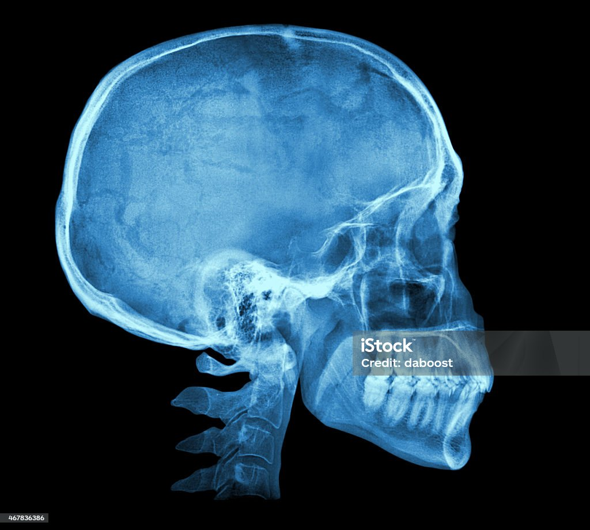
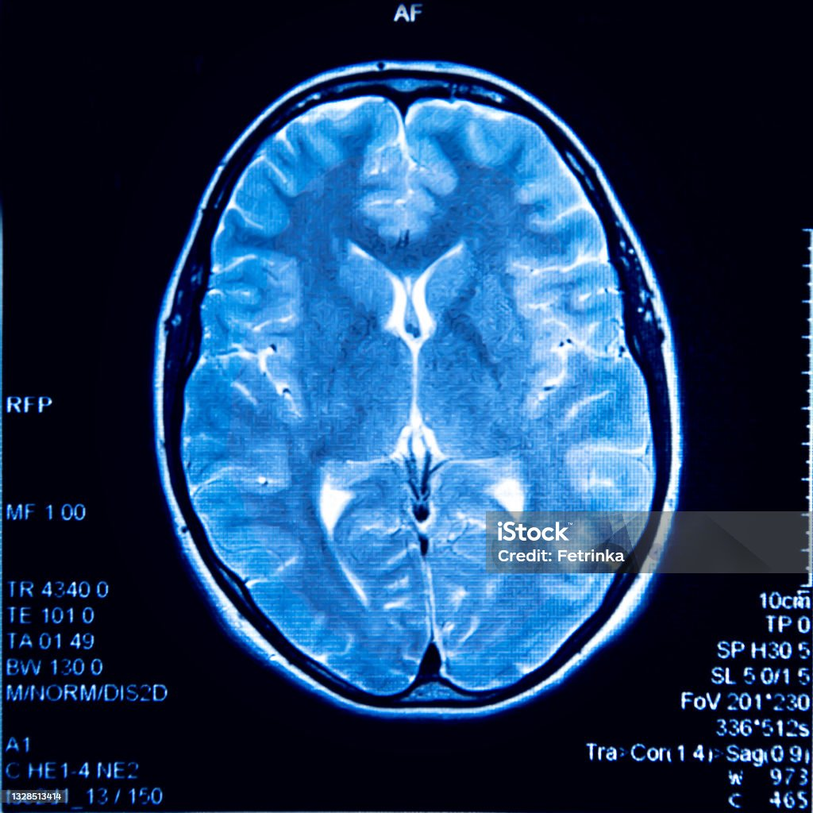
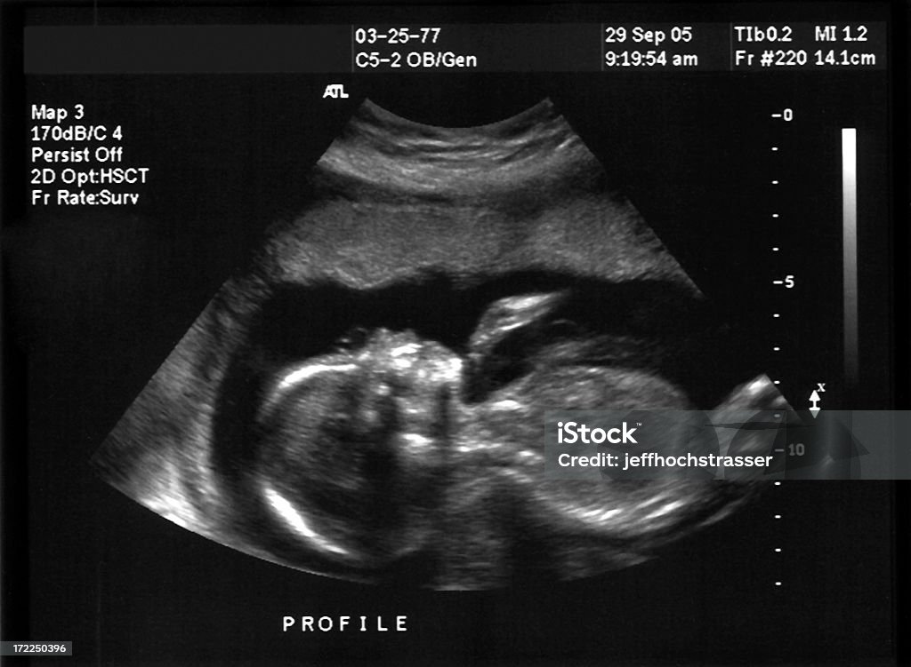

Radiology - Humans & Machines
What is Radiology?
Radiology, also known as diagnostic imaging, is a series of tests that take pictures or images of parts of the body. The field encompasses two areas — diagnostic radiology and interventional radiology — that both use radiant energy to diagnose and treat diseases. While there are several different imaging exams, some of the most common include x-ray, MRI, ultrasound, CT scan and PET scan.
Importance
Every sector within the health care field relies on radiology, including:
- Surgery
- Pediatrics
- Obstetrics
- Oncology
- Trauma-response
- Emergency medicine
- Infectious disease
In many cases, early diagnosis can save lives, including those of patients diagnosed with cancer. Family doctors and emergency care physicians cannot effectively manage patients without diagnostic imaging, which is why they rely on radiology to find the right diagnosis and course of treatment.
Types of Radiological Imaging
- Radiographs: X-rays to look at bones, the chest or the abdomen.
- CT (Computed Tomography): A CT captures multiple x-ray angles of the patient using a doughnut-shaped machine, then creates computer-processed images.
- MRI (Magnetic Resonance Imaging): An MRI uses magnetic fields and radio waves with computer processing to create images.
- Mammograms: Specially powered x-rays that look at breast tissues.
- Ultrasound: An ultrasound uses sound waves to create moving images that display on a monitor, commonly used for echocardiograms and examining the womb during pregnancy.
- Fluoroscopy: X-rays that make moving images of the body in real time. This imaging is crucial for many procedures, especially those involving the gastrointestinal tract.
- Nuclear medicine: These are short-acting radioactive substances that generate light from bodily processes. A camera collects the light, so a computer can process it and develop an image.
Image Gallery



Cases Gallery